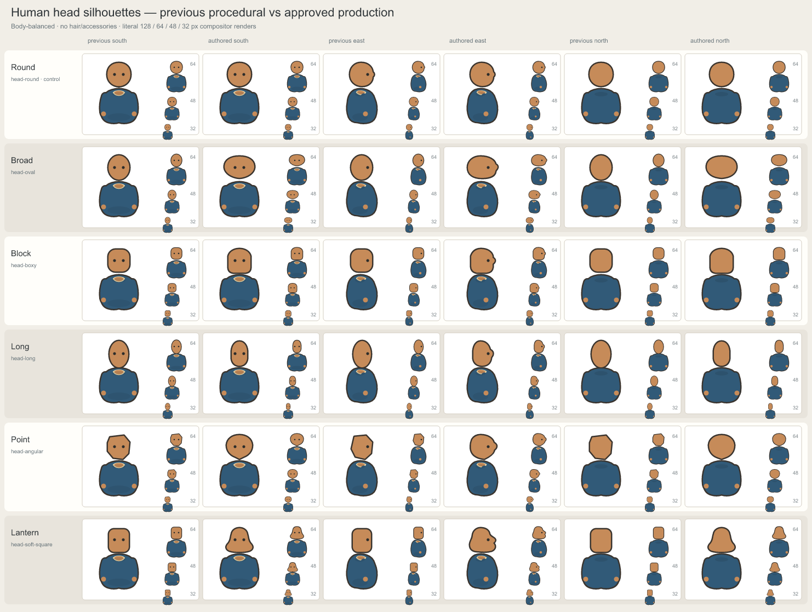
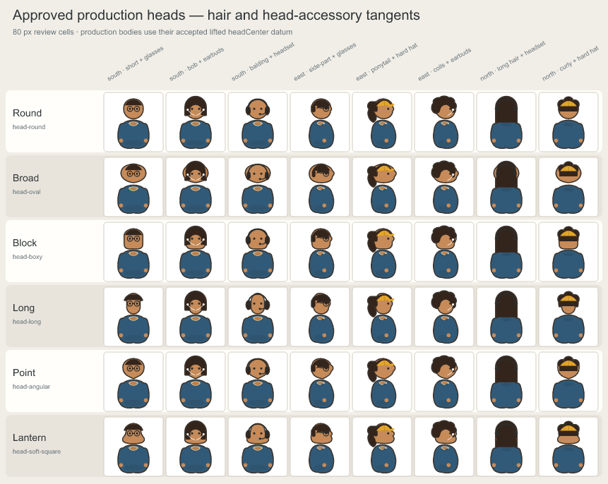

Authored head silhouette review
The approved production family keeps stable runtime ids and one rigid head transform while separating Round, Broad, Block, Long, Point, and Lantern at game scale. Production bodies own the lifted head datum; legacy bodies retain their fallback framing.
Previous procedural geometry vs approved production art

Hair and head-accessory tangents
